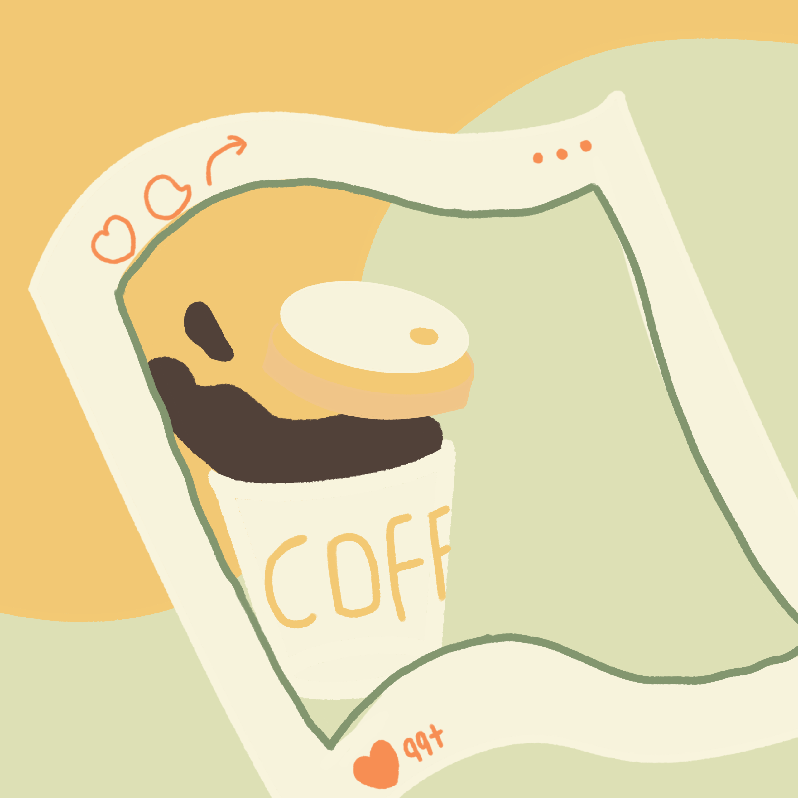
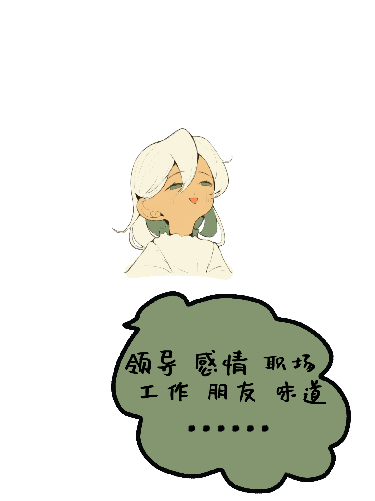
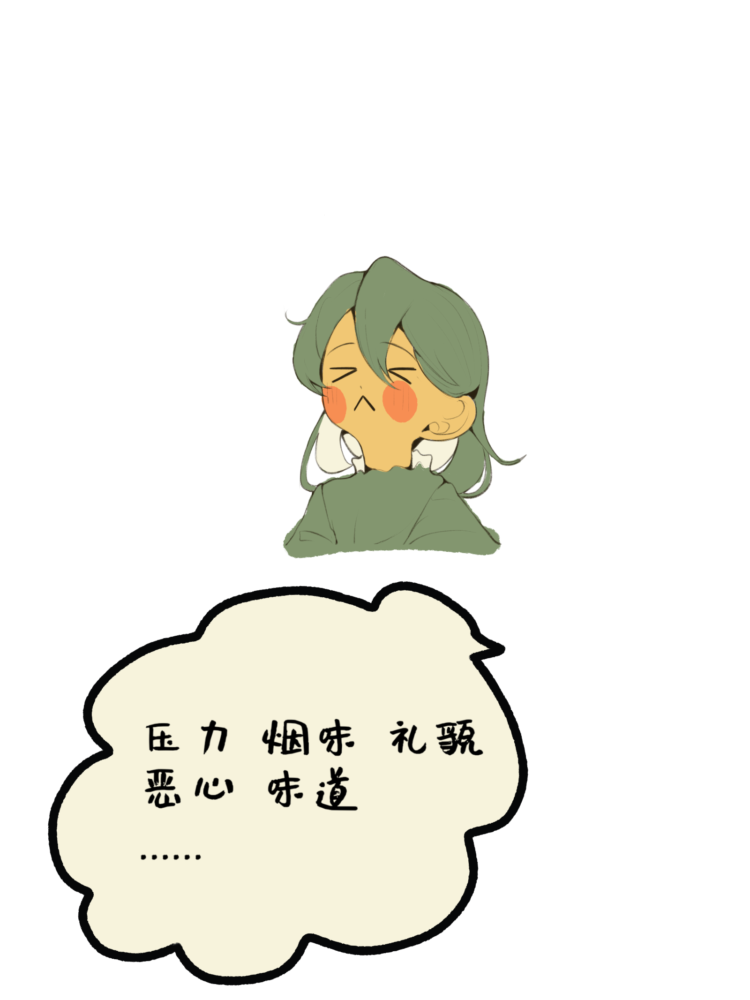
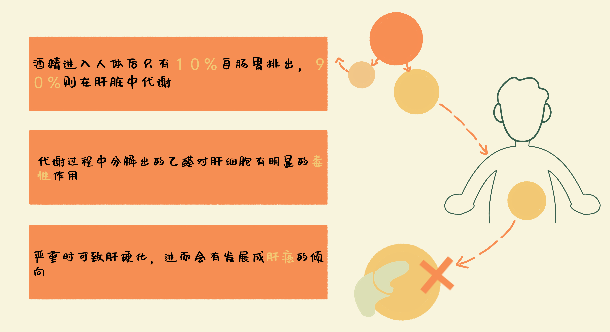
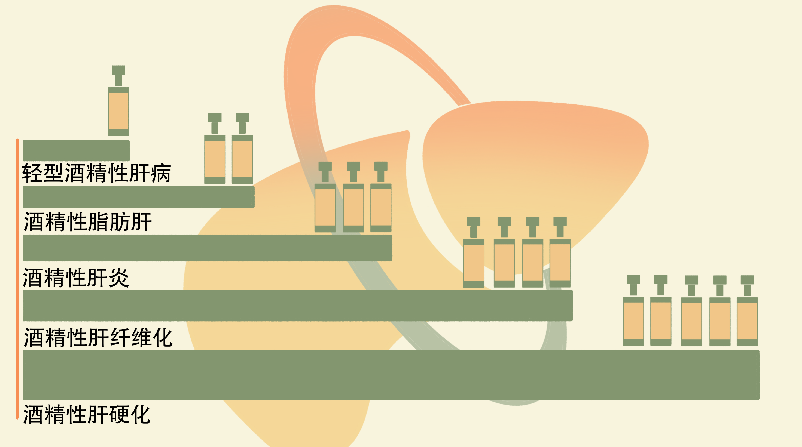
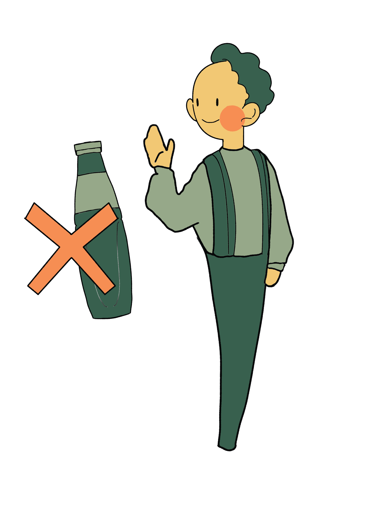
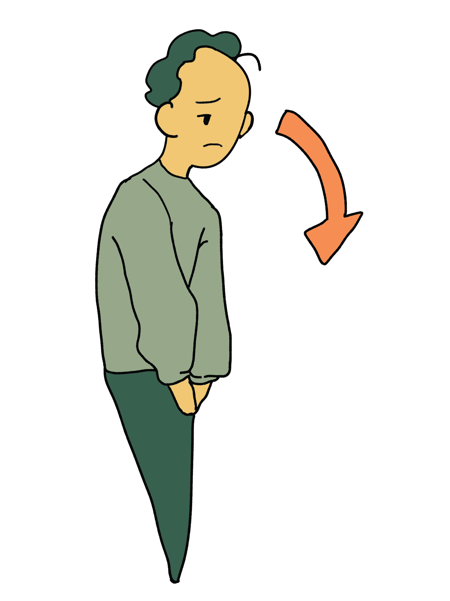
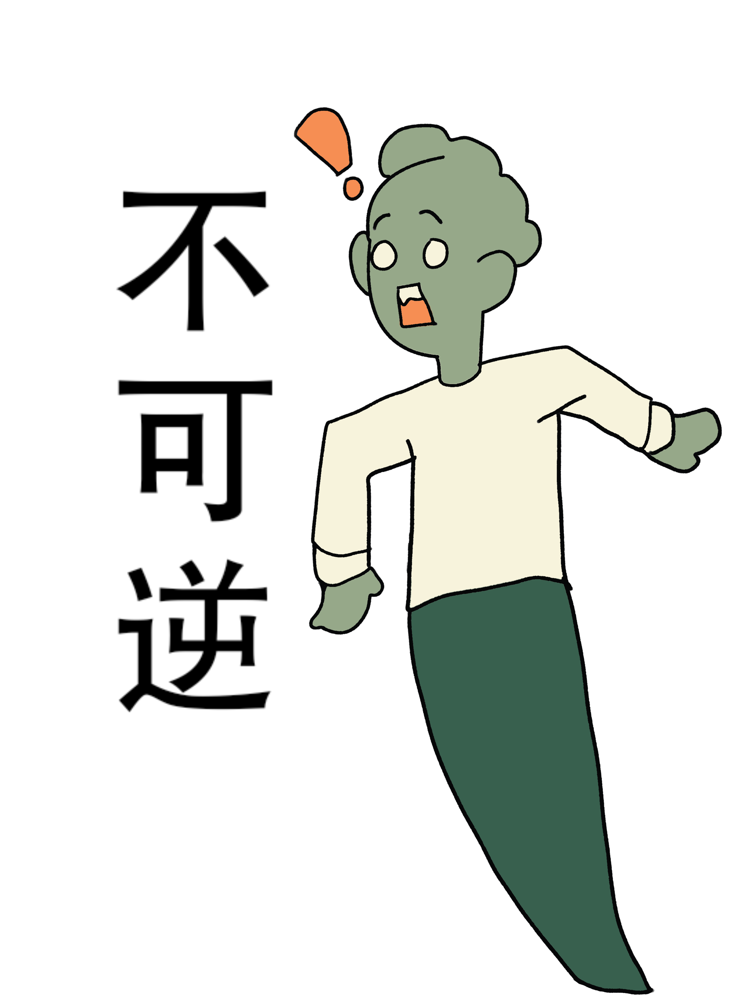

引言
2023年9月，一款爆火单品“酱香拿铁”引爆市场。
千百年来，酒都是中国人日常生活的重要组成部分之一。作为饮品的酒，在给人们带来独特风味与麻痹神经所带来的轻松之感的同时，其自身独特的符号意义与象征也时常在社交场上把人们带入一个进退两难的境地……
如何与酒共处，是如今年轻人所面临的一大重要健康话题。我国是肝癌大国，由过度饮酒所造成的酒精肝正是其中一大病症，然而有许多人还没有认识到其中的严重性。通过对酒精肝的科普，我们希望引起人们的重视，在保证自身健康的前提下，轻度饮酒，共同引领饮酒新风尚。


当茅台遇到咖啡：酱香拿铁，你喝了吗？
今年九月，不少年轻人喝到了自己人生中第一杯“茅台”——酱香拿铁。
酱香拿铁，是贵州茅台与瑞幸咖啡推出的联名咖啡，其中含有53度贵州茅台白酒风味的厚奶，饮品整体酒精度数低于0.5度。
酱香拿铁的推出是白酒与咖啡的首次“跨界”合作，如此新奇的组合一经推出便在年轻一代中引起了轰动。2023年9月5日，瑞幸咖啡宣布其酱香拿铁新品刷新单品纪录，单品首日销量突破542万杯，首日销售额突破1亿元。除此之外，也在各大社交媒体引起热议，有关酱香拿铁的词条多次登上微博热搜榜，众多“打卡”图文也席卷而来，人们对其关注可见一斑。
白酒市场稳中向好
酱香拿铁在流量和销量上取得双赢，背后更蕴含着中国白酒市场稳中向好的发展态势。
白酒市场规模如上图所示，鼠标滑动可查看更多数据
年轻一代成为白酒的新兴消费群体
对于白酒不熟悉的小伙伴可能会好奇，“为何这款饮品要命名为‘酱香拿铁’呢？酱香究竟是何物呢？”
中国白酒历史悠久、品类众多。根据生产工艺、口感特点和风味，白酒可分为酱香型、浓香型、清香型、兼香型、凤香型等多达12种风味，而酱香型是三大基础香型之一。
从香型选择看，浓香、酱香与清香型型白酒作为主流香型优势明显，根据腾讯营销洞察（TMI）联合中国酒业协会推出的《2023年中国白酒行业消费白皮书》，过去一年尝试过的浓香、酱香群体分别都为67%，清香型产品过去一年尝试过的人群占比高达59%，稳居第二梯队。（腾讯广告x中国酒业协会《2023年中国白酒行业消费白皮书》）
在酒桌与职场、商务和社交场合紧密相关的中国社会，随着年轻一代逐渐步入职场，白酒消费群体也呈现出年轻化的趋势。
《2023年中国白酒行业消费白皮书》发现，白酒主力消费人群代际交替，商务及管理人群、95年后出生的职场新人、85年至94年出生的普通白领人群具备高增长潜力。
如何应对应酬中的酒桌文化，是职场新人需要面对的经久不衰的议题之一。“职场新人，不会喝酒，如何在酒桌上自然得体地拒绝喝酒？”这一问题，在知乎上收获了138个回答，129945次浏览，网友提出的方案各有千秋。
“绝对不要端起第一杯酒喝下去，喝了一口就没救了。宁死抵抗也不能喝一口。”
知乎-Marlboro
“最简单的办法，喝下一杯后，要么喷着吐，要么直接溜桌子，以后就没人敢灌你了……那些说什么喝酒过敏，得过肝病的，不能说这些理由不好使，但却让你比较尴尬，但凡有心眼儿不好的人，会借此一直奚落你……”
知乎-卢昱
“实话实说就好了。我第一次和单位领导同事吃饭的时候被劝酒。我说我不会。他们不信非让我喝一个。好！一杯酒下肚，直接吐了一桌子。从此再没有人跟我提过酒的事了。”
知乎-黑郁金香
“在中国这种人情社会下，工作应酬几乎很难不喝酒，只能说尽量少喝。”
知乎-不会写材料的咸鱼
“第一，主动拒绝。你就很简单的我不喝酒，不用话太多。第二，开车。这个最好用，如果你不想喝酒就主动争取做司机。第三，就是身体原因，只要是身体原因，一般人家也不太会强求。第四就是临时原因，比如说我明天要体检，或者我明天早上要赶早飞机出差。这些场合你不喝酒可以，但是要机灵一点，经常给客户和领导加菜添茶，做好服务工作，然后以茶代酒，套用敬酒话术，照样可以给大家留下一个好印象。”
知乎-屋顶的Kari
“用真诚的语言表达真实的情况，我想是不会有人故意为难的，如果有人刻意为难，倒也不必死要面子。”
知乎-知道了吧
“如果直截了当得拒绝还不依不饶，那就换一个工作。不要在这种粪坑里耗着。”
知乎-哈哈哈
拖拽查看更多回答
对于相当一部分不谙其道的职场新人来说，酒杯里还有着应付规则的烦恼和承受其中暗含的压迫。
当然，酒不完全是职场压力、人情世故的代名词，在那摇晃的酒杯中，也消解了无数人的忧愁、焦虑与伤心。
知乎“为什么酒这么难喝（辛辣的，酸涩的等等），人们还喜欢喝酒？”有722个回答，999433次浏览。
在节奏快压力大的现代社会，酒精带来的微醺和麻木成为生活中释放心绪的良剂，也是促进人际往来的一种方式。
主题模型分析
我们对爬取的知乎问题回答文本使用LDA主题模型的分析方法。主题模型将这些文本自动编码为一定数量的主题，并计算每个主题下词出现的概率和每个主题在文本中出现的概率。我们把情感分析后形成的正负面描述词和主题模型得到的特征词相结合，对正、负面回答文本数据分别构建LDA主题模型，设置主题数为3经过LDA主题分析后，得到每个主题下10个最有可能出现的词语。


根据这两条知乎问答的主题特征词，领导要求、工作压力、同事关系等都是让人在酒桌上感到紧张并产生负面情绪的因素，礼貌和社会习惯要求职场人士融入到酒桌文化中，用酒桌上的一套方式去处理人情世故。
而回归到酒精本身，饮酒带来的大脑麻痹，情绪放松的感觉，则让许多人迷上喝酒，享受现在。喜欢酒的口味和口感的人，也根据自己的喜好和主观感受，去探索不同品类的酒，为了身心愉悦而主动去品尝美酒。相比迫于文化规则的饮酒，出于自己的喜好去喝酒给人带来正向的情绪反馈。
肝癌与酒精肝
酒桌陋习，往往意味着不得已的过度饮酒。而过度饮酒对身体带来的危害数不胜数：肝硬化（肝细胞受损）；胰腺炎（胰腺发炎）；各种癌症，包括肝癌、口腔癌、咽喉癌、喉癌（声带）和食道癌；高血压；胎儿酒精谱系障碍；婴儿猝死综合症（SIDS）；心理障碍。
其中，最为严重的当属酒精性肝病（ALD）。
肝癌是全球范围内最常见的恶性肿瘤之一，我国是肝癌大国，每年有不少患者苦于肝癌的病痛折磨，即使医疗人员与亲人如何极力挽留也难以让“死神”放慢脚步……
中国肝癌的发病率和死亡率多年处于世界第一，根据世卫组织国际癌症研究署发布的全球最新癌症负担数据显示，2020年中国肝癌总发病人数41万人，致死人数39万人，发病人数与死亡人数约占全球一半，在中国癌症发病率中居第5位，死亡率居第2位。
那么肝癌的致病因到底有哪些呢？
根据现有资料，肝癌的致病因素主要包括肝炎病毒、黄曲霉毒素、酒精性肝病与代谢相关脂肪性肝病、饮用水污染、饮酒、遗传以及其他因素（包括营养不良等）。
从人为因素来看，酒精是肝癌的重要致病因。
酒精肝的发病情况
酒精性肝病(alcoholic Iiver disease， ALD)，又叫酒精肝，是指因长期过量饮酒而引起的肝脏损害，最初表现为显著的肝细胞脂肪变，后可进展为脂肪性肝炎、肝纤维化和肝硬化，短期内严重酗酒也可能导致急性重症酒精性肝炎、慢加急性肝功能衰蝎，甚至导致死亡。

据北京大学人民医院肝病科主任，教授在《饮酒及酒精性肝病的流行病学现状》一文中所述，我国缺乏全国性的酒精性肝病流行病学数据，但近年来我国的人均酒精消耗量、饮酒人群比例以及酒精性肝病的患病率均呈上升趋势，均处于全球中上水平。在5年以上饮酒史的大量饮酒者中，酒精性脂肪肝、酒精性肝炎和酒精性肝硬化的发生率分别达到
50%、10%和10%
同样饮酒量和时间的条件下，女性比男性更易患酒精性肝病。
据文献报道，中国特定地区酒精性肝病的患病率占总人口的2.3%~6.1%。北京302医院住院患者统计分析，酒精性肝病占比从2002年的1.7%持续上升到2013年的4.6%，同期重症酒精性肝炎患者也增加了2.43倍。酒精性肝病占所有肝病住院患者的比例和酒精性肝硬化占所有肝硬化比例均在不断上升，导致的肝移植患者也在增多……
可见，过度饮酒所造成的酒精肝已严重影响到了我国居民的身体健康！
酒精肝的分类

酒精肝的症状



大部分酒精性肝病患者在肝脏严重受损之前不会表现出任何症状。具体来说，症状轻重一般与饮酒量和饮酒时间及其相关肝损伤程度有关，具体可以分为以下三个阶段
初期：为轻度酒精性肝病和酒精性脂肪肝，多无明显临床症状，如果此时戒酒，3~6个月后肝脂肪变和肝损伤可完全恢复正常；
加重：随着肝功能损伤程度加重，会发展为酒精性肝炎肝纤维化，可有乏力、食欲不振、肝区不适，甚至黄疸（脸色和眼睛发黄）和水肿（双下肢及脚踝、脚部较明显）等症状；
晚期：将发展为酒精性肝硬化，出现一系列典型表现和并发症，此期肝脏损伤不可逆，但立即停止饮酒可以防止对肝脏进一步的损伤。
请千万千万记住，不要过量饮酒！对自己的健康负责！
我们也应该去进一步思考如何预防酒精肝。
酒精肝的致病因素中过度饮酒是最直接的因素，除此之外，过度饮酒还会有可能造成酒驾伤人、酒后暴力等悲惨事件，长期过度饮酒还易导致酒精成瘾，进而在酒精“海浪”的裹挟中起伏，在清醒与昏沉中来回切换，一切都身不由己。
但酒的诞生，就是为了让人痛苦吗？
大街上随处可见的清吧、酒吧，货架上陈列的种种预调鸡尾酒、果味酒精饮料……显然，酒精在现代人日常生活中还有其自身的重要位置。
对现代人来讲，人们更在意的是酒精所带来的微醺感受，以及它所带来的情绪价值和特殊意义。
在豆瓣“酒鬼种草拔草基地”小组，132330位酒鬼在组中推荐酒品，分享心情。主动去追寻饮酒的乐趣，是小组成员聚集在社交平台上的主要原因。
酒与生活似乎密不可分。
“感觉”、“风味”、“口感”、“朋友”，小组成员更在意饮酒时的个人感受。在工作、生活、学业种种压力下，摄入酒精能有效地释放情绪。
追求氛围感，强调情调的Bistro掀起新潮，日常料理配一杯酒的微醺小酒馆成为一种时新的生活方式。代表传统高端酒的茅台与代表年轻新潮的瑞幸咖啡联名，看似反差很大，实际上反映了新的饮品潮流——酒精风味的替代性饮品，以及新的生活风尚——微醺化的适度饮酒。
在健康的“准绳”内，在与家人的温馨团聚，与三两好友的相聚，和恋人的甜蜜约会中，轻饮几杯，让酒精所带来的微醺为情感“升温”，也许这才是我们与酒精最好的相处之道……
数据来源：
[1]豆瓣“豆瓣酒鬼种草拔草基地”小组下的2655条帖子；
[2]知乎“职场新人，不会喝酒，如何在酒桌上自然得体地拒绝喝酒？”问题下 的138条回答文本内容；
[3]知乎“为什么酒这么难喝(辛辣的，酸涩的等等)，人们还喜欢喝酒？”问题下的722条回答文本内容。
参考资料：
[1]《2023年白酒行业消费白皮书》（腾讯广告x中国酒业协会）
[2]百度健康医典-酒精性肝病
[3]默沙东诊疗手册（大众版）-酒精相关性肝病
[4]《2023年度癌症报告》（Cancer Statistics 2023）
[5]曹梦迪,王红,石菊芳,等.中国人群肝癌疾病负担:多数据源证据更新整合分析[J].中华流行病学杂志, 2020, 41(11):11.DOI:10.3760/cma.j.cn112338-20200306-00271
[6]谢艳迪,魏来.饮酒及酒精性肝病的流行病学现状[J].肝博士, 2017(6):3.DOI:CNKI:SUN:GBSH.0.2017-06-011.
团队信息：
数据收集：张皓翔、王佳睿
数据处理与可视化：张皓翔、王佳睿、童玮嘉
采访：徐璟茗
文稿撰写：徐璟茗、乔康乃馨
网页制作：王佳睿
美工设计：童玮嘉
指导教师：董庆兴、侯晓艳